COMP 2406 - Fall 2022/Winter 2023 Tutorial 04
Hosting Remote Servers on Openstack
© L.D. Nel 2023
Revisions -none yet
Description:
The purpose of this tutorial is to get you to follow the instructions posted on the SCS website and get a node.js server running on one of our "cloud" openstack machines.
If you run your server on openstack you, and others, will be able to reach it using a Carleton IP address. This will allow us to run servers that users on different machines can access. This will be important in future assignments and tutorials when we want clients to collaborate like in a chat server or multi-player online game.
SCS has posted detailed instructions and some videos on creating and launching an openstack linux image. We've added some additional content here about migrating your node.js code to that image.
The task in this tutorial is to navigate the SCS instructions and get your server running. Andew Pullin made an additional video for us last term and I've posted that with the tutorial. Note for this term we will be using the COMP2406-W23 project and image. In Andrew's video he will be referring to COMP2406-F22 instead. Actually for this tutorial is does not matter which one you use but COMP2406-W23 is the intended, most current, one.
Here we are presenting a very basic workflow to move files to the Openstack image and launch them. As such, we don't need to connect via a windowed graphical interface. If you are planning to do code development on the remote openstack machine you might want to connect with a client like X2GO or use one of the other techniques that Andrew describes in his tutorial videos. In the past we have found that windowed environments like that can be quite slow and perhaps frustrating to use.
Regardless, if you have a preferred workflow for achieving the tasks in this tutorial please let us know through the Discord server so others can try them as well.
Important: tutorials are meant to be started and submitted as homework. You can come and get help each week at the your registered tutorial session but it's best to get started before the session.
Tutorial Grading: To get credit for weekly tutorials you need to submit to brightspace your code and a ReadMe.txt file with at least your name, student number and the link to your YouTube screen capture demonstration video. The video should have sound narration and demonstrate that you have met the tutorial requirements. (Make sure your video is "unlisted" and not "private" on YouTube - otherwise we won't be able to view it and it will be counted as missing. Submit a single .zip file with all your contents to Brightspace. Brightspace should allow you to resubmit your file up until the due time and will only keep the most recent submission. Grade is 0,1, or 2 as follows:
| Mark | Tutorial Grading |
|---|---|
0marks |
No submission or incomplete submission. Submissions without accompanying video get a mark of 0. Note: mark is 0 if any of the following are true:
|
1mark |
Some, but not enough, requirements met or demonstrated. Note: mark is only 1 if any of the following are true:
|
2marks |
All requirements met and demonstrated in accompanying video for required problems. Does not include problems labelled as "Optional" |
Preliminary Instructions:
VPN
Remember our scs openstack images are accessible directly if you are on campus and connected to Carleton's cu wireless network. If you want to perform the actions in this tutorial from home you must first establish a VPN (Virtual Private Network) connection to Carleton. The instructions for using VPN are described in Andrew's tutorial video and also here:
https://carleton.ca/its/help-centre/remote-access/
If you are at home start by estabishing a VPN connection before proceeding with the tutorial exercises.
Problem 0: Creating and Launching an Openstack Image
Andrew Pullin has created some tutorial videos on creating and launching openstack images. He also did a dedicated Zoom session on doing this for the 2406 course last term. A recording of his Zoom session is on YouTube here:
There are also his step-by-step "Getting Started With Openstack " guide on thescs technical suppport page here:
https://carleton.ca/scs/tech-support/scs-open-stac
Using this video and guide as a reference create and launch an Openstack image. Ensure that you are using the 2406 image described in Andrew's YouTube video (for winter 2023 there should be a more recent image available: COMP2406-W23) and also make sure you follow the steps in the guide about associating a Carleton floating IP address with your image. With that you will be able to reach your servers using a Carleton IP address like http://134.117.XXX.XXX/index.html
IMPORTANT: The approach and screen captures in what follows shows just one way of doing things. There are other approaches and you can use whatever works for you.
Problem 1: Accessing your Openstack Image from your Local Machine
Andrew descibes several ways to access your Openstack image from your local machine. One way is using a ssh secure shell from a command line terminal application. On windows the free utility Putty is very popular for this. On Mac and Linux machines you can use the built in terminal application. (More recently Window's Powershell might also allow SSH access but might require installing some modules -let us know if you use it what is required.)
Use the built in terminal application to log into your remote openstack image with the ssh command at your floating IP address (the openstack images all have a student user with default password student):
ssh student@134.117.217.107
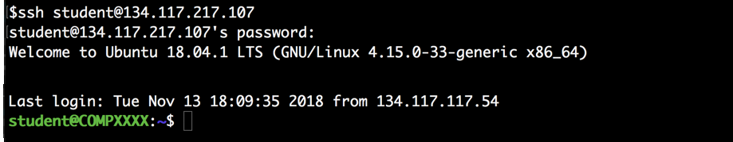
Use the PuTTy utility on our lab machines or install PuTTy on your own machine (see: https://carleton.ca/scs/technical-support/software/).
You create an SSH session in Putty to connect to your Openstack image using it's floating IP address:
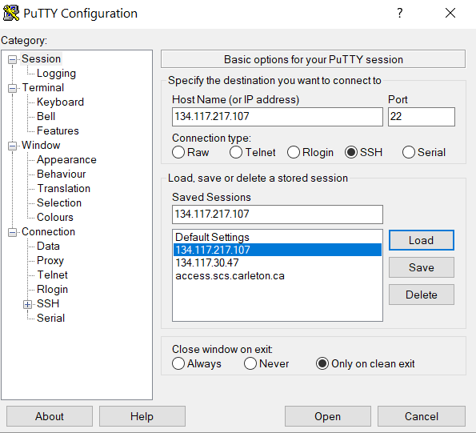
When you open the session you should have a terminal on the remote machine where you can log into the student user account:
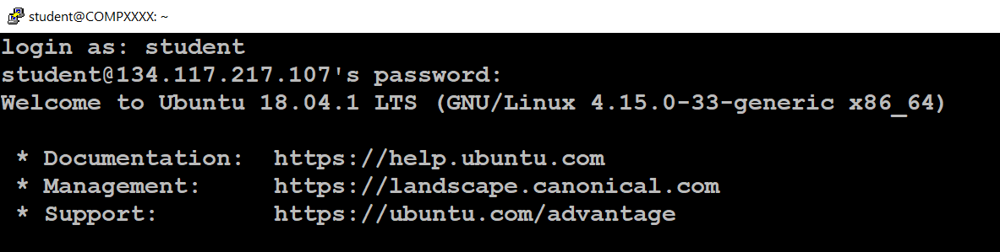
Now that you have established a connection to your openstack image we can proceed to building our server application.
Again, Andrew's YouTube video describes other ways of accessing your Openstack machine as well.
Problem 2: Moving Server Files to Openstack
Next we want to move the tutorial 04 demo server code files to the openstack virtual machine. There are probably many ways to do this as well (and let us know what your favourite is). Students using Windows often do this with the free WinSCP utility. A popular app for Mac OSX is Cyberduck. Filezilla is a popular cross platform tool. Here however we are just going to move files using command line scp secure copy command.
Here we will just use the remote copy command through a terminal.
Open a new terminal window and again log into your openstack image:
Create a directory for your openstack student user where we will put the code we want to execute (here I've named the directory: 2406). Find the full name of the directory path with the pwd (print working directory) command:
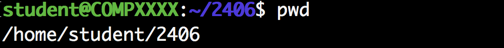
On your local machine open a command terminal to where your copy of the tut04_demo_server.zip demo code is located. You can copy the file to the openstack machine with the scp command. The syntax is
scp /path/to/local/file user@remote_host:/path/to/remote/file.
On the console logged into your openstack machine verify that the tut04_demo_server.zip file is now on your openstack machine:
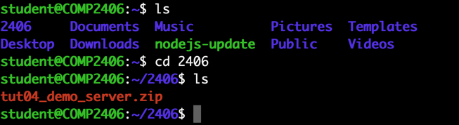
Probably the favourite tool for doing scp copies on windows is the WinSCP utility. (see: https://carleton.ca/scs/technical-support/software/). Like PuTTy it should be installed on the lab Window's machines or you can install it on your own machine.
Again you create a session to connect to your remote Openstack image using its floating IP address:
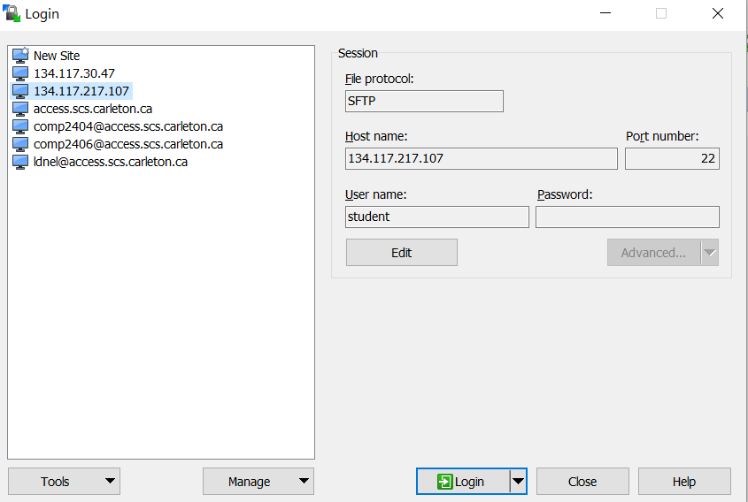
Once you login you can move files back and forth between a local directory and a directory on the remote machine (note in this screen capture we are transferring a different file):
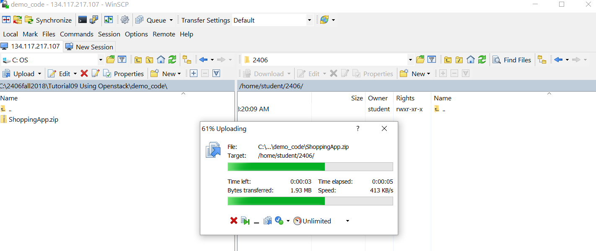
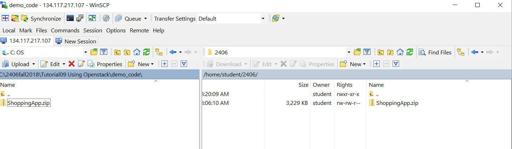
Once you have the demo code zip file on your remote machine unzip the file with
unzip tut04_demo_server.zip
Verify that your unzipped server is now on your openstack machine:
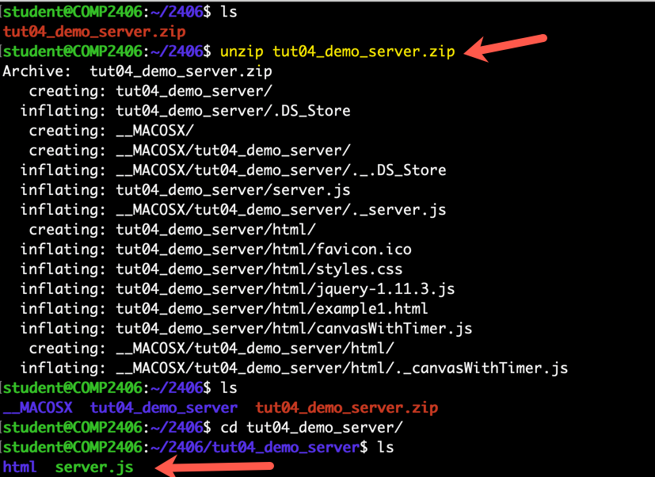
Problem 3: Running Your Server
In your openstack console navigate to the directory where your demo server is located:
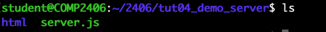
Verify that node.js is installed on your open stack machine by executing node -v
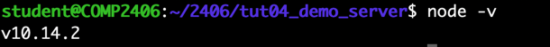
Start the server with node server.js
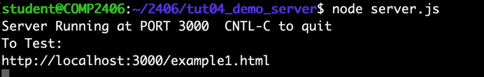
From your local machine use a Chrome, or other, browser to access your server at its floating point IP address: For example: http://134.117.216.34:3000/example1.html
If successful you should now be able to see the app provided by the server which is basically the answer code from tutorial 02.
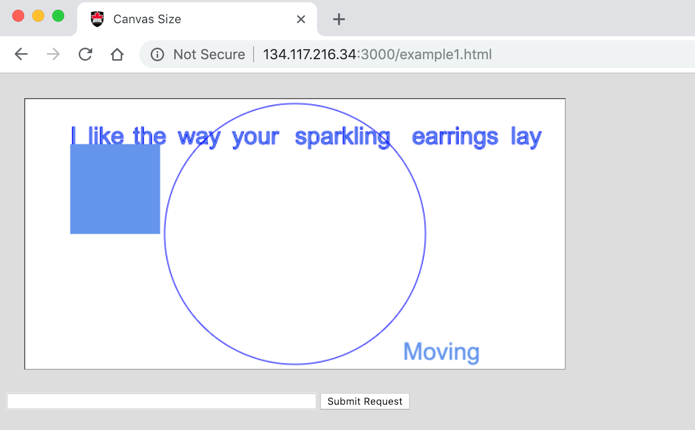
Congratulations! You now have server running on a remote machine and can access it through your Carleton floating IP address.
When you have completed these problems create a screen capture video, with sound, that demonstrates you've completed problems by showing that you are accessing the provided server with Chrome using a Carleton http://134.117.XXX.XXX:3000/example1.html URL. Submit your code and readme.txt file (containing your YouTube link) to brightpace.
Problem 4) OPTIONAL Keeping Your Server Alive
So far we have been launching servers from a console by exectuing node server.js.
If you do that the server has the console occupied in you don't get a command prompt. If the console window is closed the server is shutdown because it is a child process of the console application's process.
You could run the server in the background by exectuing
node server.js &
That would return control to the console (and you would get a command prompt). But if you shut down the console the server is still killed because it's still a child process of the console.
To launch the server and and be able to sever the connection with the console you can exeute
nohup node server.js &
The nohup (no hang up) linux command will keep the child background process from receiving the hangup SIGNAL when the console is closed.
You should now be able to exit the console and shut it down leaving your server running to be accessed by another computer. Make sure to execute exit in the console THEN close it's window. (On Windows using PuTTy make sure to exit the console by executing exit and not just closing with the console window with its "X" button -which WILL likely shut down your background server process.)
Someone should now be able to access your server from another machine using your server's asscociated IP address:
Later if you need to kill a node.js server process that is not represented by a console you can log into your openstack machine and execute:
ps aux | grep node
to find the process id and then kill the process with:
kill -9 PROCESS_ID
It's very common to get the following error.

It means you already have another node server running on the target port (3000 in this case). Find that server and shut it down. Typically it's in another terminal window but if it is running on a remote machine there may no longer be a console associated with it. Find the process and kill it as described above.